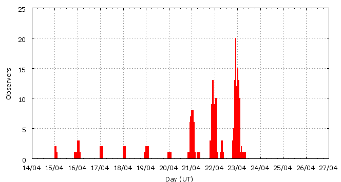

Activity profile
Activity profileThis page shows automated results of the Lyrids 2007, based on visual data entered through the IMO electronic report form. Send your feedback regarding this page to Geert Barentsen or visit the project pages. Note that automated results are not suitable for scientific use!
Page generated on 9 December 2008 at 2:48 UT.
ZHRmax = 21 based on 796 Lyrids in 201 data intervals, assuming fixed population index r = 2.1 and zenith correction 1/sin(hR).

| Time (UT) | Solarlon | nINT | nLYR | ZHR | |
|---|---|---|---|---|---|
| 2007-04-15 12:03 | 25.048 | 6 | 10 | 2 | +-1 |
| 2007-04-16 10:44 | 25.974 | 5 | 12 | 3 | +-1 |
| 2007-04-17 06:36 | 26.785 | 5 | 7 | 3 | +-1 |
| 2007-04-18 16:54 | 28.182 | 6 | 15 | 3 | +-1 |
| 2007-04-19 15:46 | 29.113 | 5 | 7 | 3 | +-1 |
| 2007-04-20 22:20 | 30.358 | 22 | 57 | 5 | +-1 |
| 2007-04-21 16:43 | 31.106 | 21 | 50 | 5 | +-1 |
| 2007-04-21 23:47 | 31.393 | 12 | 51 | 8 | +-1 |
| 2007-04-22 01:11 | 31.450 | 12 | 65 | 9 | +-1 |
| 2007-04-22 02:07 | 31.488 | 9 | 52 | 10 | +-1 |
| 2007-04-22 17:13 | 32.102 | 15 | 50 | 10 | +-1 |
| 2007-04-22 22:15 | 32.306 | 20 | 71 | 17 | +-2 |
| 2007-04-22 23:07 | 32.342 | 11 | 73 | 21 | +-2 |
| 2007-04-23 00:18 | 32.390 | 14 | 97 | 18 | +-2 |
| 2007-04-23 01:14 | 32.428 | 22 | 126 | 16 | +-1 |
| 2007-04-23 02:09 | 32.465 | 16 | 53 | 10 | +-1 |
For each estimation interval: time is the middle of the interval, nINT is the number of observing periods and nLYR is the number of Lyrids involved. ZHR = (1 + sum nLYR) / sum(Teff/C) where Teff is the effective observing time and C is the total correction for limiting magnitude, clouds and zenith correction. The solar longitudes refer to equinox J2000.0.
Data has been received from 35 observers in 15 countries. Thank you for your efforts!

| Observer | Country | Teff | nLYR |
|---|---|---|---|
| Salvador Aguirre | Mexico | 1.00h | 4 |
| Rainer Arlt | Germany | 3.11h | 18 |
| Pierre Bader | Germany | 11.45h | 59 |
| Ricardas Balciunas | Lithuania | 3.00h | 16 |
| Felix Bettonvil | Netherlands | 1.78h | 4 |
| Jean-marie Biets | Belgium | 2.48h | 8 |
| Andreas Buchmann | Switzerland | 9.92h | 29 |
| Dariusz Dorosz | Poland | 6.50h | 32 |
| Gunther Fleerackers | unknown | 1.00h | 9 |
| Gunther Fleerackers | Belgium | 1.33h | 2 |
| Stela Frencheva | Bulgaria | 4.09h | 27 |
| Mitja Govedic | Slovenia | 8.95h | 89 |
| Pavol Habuda | Slovakia | 1.17h | 9 |
| Wayne T. Hally | United States | 8.70h | 35 |
| Joost Hartman | Netherlands | 2.07h | 4 |
| Roberto Haver | Italy | 2.09h | 21 |
| Jay Kansara | India | 3.43h | 9 |
| Roy Keeris | Netherlands | 3.57h | 10 |
| Andre Knofel | Germany | 8.76h | 42 |
| Richard Kramer | United States | 0.62h | 3 |
| Alister Ling | Canada | 1.72h | 6 |
| Koen Miskotte | Netherlands | 12.11h | 64 |
| Sabine Wachter | Germany | 1.25h | 3 |
| Sven Nather | Germany | 2.11h | 18 |
| Martin Nedved | Czech Republic | 2.14h | 19 |
| Swapnil Pawar | India | 2.95h | 6 |
| Jatin Rathod | India | 3.46h | 5 |
| Jurgen Rendtel | Germany | 20.84h | 101 |
| Ulrich Sperberg | Germany | 4.29h | 13 |
| Manuela Trenn | Germany | 2.00h | 8 |
| David Vansteenlant | Belgium | 2.05h | 16 |
| Michel Vandeputte | Belgium | 14.25h | 107 |
| Jan Verfl | Czech Republic | 1.63h | 12 |
| Frank Wachter | Germany | 1.25h | 4 |
| Thomas Weiland | Austria | 4.39h | 41 |
Original observations: browse report forms.
Rate intervals: lyr2007.csv (CSV-format).
More to come...